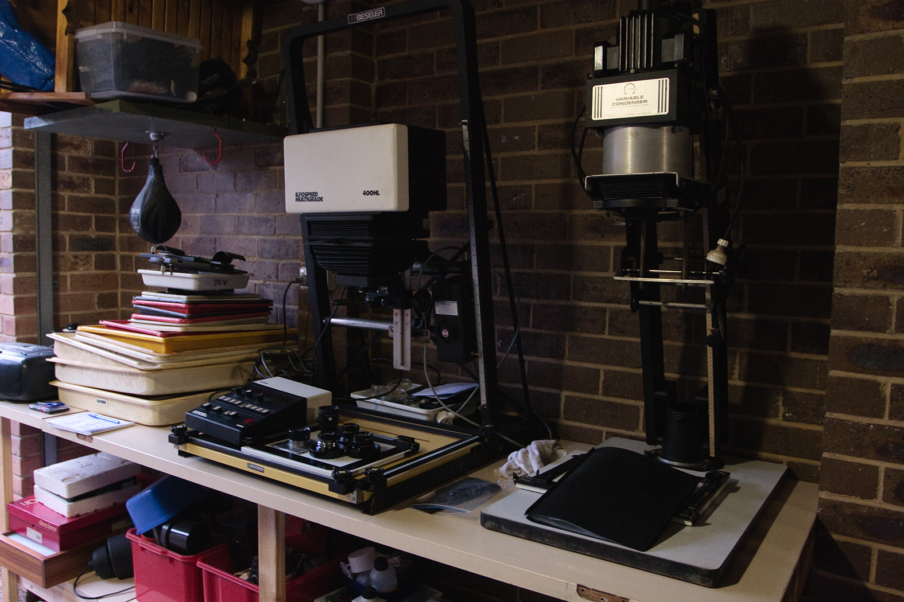

DAE - Digital to Analog Enlarger
The sonic foundation of computers is the DAC, or Digital-to-Audio Converter. It's the hardware that turns digital files into the signal that goes down the wires of your speakers to make them make sound.
What if we made a Digital to Analog Enlarger for photographs? I mean, this already exists in some ways. Any time you get a digital photo printed there's a process that does it that can output to various sizes. That's not what I'm talking about.
I'm talking about one that looks like this:

Ones that project light onto a piece of paper covered with a light sensitive emulsion. The next step being to run the paper through a series of chemicals to produce the image.
It's a bit of a ridiculous way to go about it, but it would give you the chemical experience from your digital images.
Endnotes
-
The source of the enlarger photo here.
-
Probably someone has already built one of these.
-
It's unlikely I'll ever try, but the idea is fun.